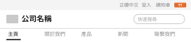
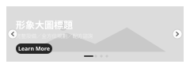
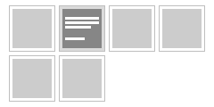

開始建立您專屬的企業網！
建站引導提供您步驟式的引導，讓您輕易設計自己想要的網站樣式。
建站引導提供您步驟式的引導，讓您輕易設計自己想要的網站樣式。
專屬網址
https://hyweb.en.taiwantrade.com (預設)
i
會員年資標章
企業網多語設定
已啟用語系：英文｜正體中文｜日文
語系啟用與停用可於日後自由調整，請放心設定。
英文為版型設定的母版語系，首頁(Home)設定完成前無法停用英文語系。
i
首頁(Home)設定
目前設定：{{ setupSummary }}
首頁(Home)設定可於日後自由調整，請放心設定。
i
其他語系內容編輯
i
英文語系為唯一版型設定頁面，其他語系資料編輯仍需至各自語系進行。
導覽列／網站選單（選填）
導覽列可於日後再進行調整，請放心設定。
i
產品型錄設定
上架型錄數： 英文(8) ｜正體中文(7) ｜日文(0)
i
收款及幣別（選填）
已啟用收款模式：Paypal：TWD｜信用卡：USD
i
線上商城(Online Shop)配置（選填）
請注意，設定前需先開通金流，並選用多頁式版型。
i
1版型與色系
2版面與內容
語系：英文（母版）
Tips: 版型與色系為各語系共用，於英文語系設定一次即可；選定後可於下一步調整首頁區塊。
* 選擇版型
Tips: 版型與區塊設定為各語系共用，選擇版型與色系後，可進一步設定您想要的資料區塊。
* 選擇色系
{{ colorTip }}
版面預覽



首頁
選定版型後，系統會為您預先排好一份完整的首頁：頁首、主視覺、公司新聞、關於我們、產品展示、行動呼籲與聯絡我們表單都已就位，未填寫的區塊會先以示意圖文佔位，您可以在下一步逐一替換成貴公司的內容。
Tips: 區塊順序、增減皆可於下一步自由調整，請放心設定。
1版型與色系
2版面與內容
語系：英文（母版）
版型：{{ setupSummary }}
{{ counterText }}
預覽前台
Tips: 系統已提供首頁預設區塊，你可增減、調整區塊順序；版型與區塊配置為各語系共用，其他語系只需編輯內容。
首頁區塊都已有內容，可以發布了。
首頁區塊（拖曳 ≡ 可調整順序）
共 {{ blockCount }} 個
≡
 {{ b.badgeText }}
{{ b.badgeText }}
Tips: 頁首與頁尾為固定區塊，不可刪除。
標示「無內容」的區塊，前台不會顯示這一區。
標示「無內容」的區塊，前台不會顯示這一區。
{{ paneTitle }}
狀態：{{ paneBadgeText }}{{ paneDesc }}
{{ tabHint }}
※提醒您：使用「分類樹搭配」前，請確認分類已啟用，且分類中已有產品型錄，否則將無法顯示於企業網站。
TAIWAN EXTERNAL TRADE DEVELOPMENT COUNCIL
logo.png
Tips: 各語系Logo圖要分別上傳。建議Logo尺寸 至少高度超過 100 px，單張圖片大小不可超過3MB。
1 / 1
Tips: 設定大圖輪播，展現公司形象可設定連結至精選頁面（產品、外部連結、優惠活動）。最多顯示五筆資料。
＋ 新增
≡
系統示意圖
大圖輪播 1
模式：不顯示標題文字於圖上, 圖片不顯示遮罩效果
連結：無連結
目前使用的是系統提供的示意圖，前台已可正常顯示。建議替換為貴公司的形象大圖，讓首頁更貼近品牌。
本樣式的內容由系統自動帶入「公司資料設定」中的固定重點資訊欄位（資本額、員工人數、主要出口市場、主要出口產品等 8 項），無需在此填寫。
前往「公司資料設定」
關於我們區塊所填寫的資料內容將寫回「公司資料設定的『About us』」欄位。
296 / 2,000
拖拉檔案或選擇檔案上傳
從圖庫選擇
從本機上傳
Tips: 最多可上傳3張簡介用圖。建議尺寸 640*360px，單張圖片大小不可超過3MB。
0 / 3
請先切換到 ② 資料條件 選擇這一區要顯示哪些產品，
選定後這裡會顯示對應的內容設定。
選定後這裡會顯示對應的內容設定。
目前條件：{{ condName }}
{{ condDesc }}前往「產品型錄設定」管理產品
{{ condDesc }}
✓ 資料由系統自動帶入，無需手動挑選；產品有異動時前台會自動更新
Tips: 自訂首頁重要的產品資訊，依您選擇的區塊模板，數量可能不同，最多可顯示24筆啟用中資料。
＋ 新增
≡
Tips: 拖曳產品可調整前台顯示順序。
區塊名稱
顯示在前台這一區的標題未填寫時，前台將顯示系統預設名稱「{{ condFallback }}」。區塊名稱可於各語系分別設定。
公司新聞為自動條件。新增更多多語公司新聞，請至「內容管理 > 公司新聞設定」管理。
前往「內容管理 > 公司新聞設定」
Tips: 可在首頁設定輪播展示Video影音、360°產品、720°實景、3D模型等多媒體資訊。(最多顯示前 5 則)
＋ 新增
≡
影片縮圖
標題：多媒體輪播
類型：Video
連結：https://www.youtube.com/watch?v=Yiqp7WM-LbI
Tips: 點「＋ 新增」可挑選範本，並直接編輯圖片、文字與連結。
＋ 新增
{{ tplPreview.title }}
{{ tplPreview.body }}
Link Text
範本示意圖
目前是範本自帶的示意圖文，前台已可正常顯示，可隨時換成貴公司的圖片與文案。
前台顯示
實際樣式以前台為準{{ systemNote }}
語系：{{ langName }}
版型：{{ setupSummary }}（由英文母版設定）
未填寫 4 項｜將沿用英文
預覽前台
🔒
本頁只編輯內容。區塊的順序、顯示樣式與資料條件皆由英文（母版）設定，各語系一致。
英文語系為唯一版型設定頁面，其他語系資料編輯仍需至各自語系進行。
首頁區塊（順序同英文，不可調整）
Tips: 要增減區塊或調整順序，請至英文（母版）設定。
{{ lpaneTitle }}
{{ langName }}{{ lpaneDesc }}
內容
{{ lpaneHint }}英文（母版）內容：TAIWAN EXTERNAL TRADE DEVELOPMENT COUNCIL
logo_zh.png
1 / 1
Tips: 各語系Logo需要分別上傳，建議Logo尺寸 至少高度超過100 px，單張圖片大小不可超過3MB。
Tips: 設定大圖輪播，展現公司形象可設定連結至精選頁面（產品、外部連結、優惠活動）。最多顯示五筆資料。
＋ 新增
沿用英文圖片
大圖輪播 1
模式：不顯示標題文字於圖上, 圖片不顯示遮罩效果
連結：無連結
未填寫將沿用英文內容
關於我們區塊所填寫的資料內容將寫回「公司資料設定的『About us』」欄位。
0 / 2,000
未填寫將沿用英文內容：TAIWAN EXTERNAL — Founded in 2002, Taiwantrade is the official B2B site of Taiwan…
拖拉檔案或選擇檔案上傳
從圖庫選擇
從本機上傳
Tips: 最多可上傳3張簡介用圖。建議尺寸 640*360px，單張圖片大小不可超過3MB。
0 / 3
Tips: 自訂首頁重要的產品資訊，依您選擇的區塊模板，數量可能不同，最多可顯示24筆啟用中資料。
＋ 新增
≡
區塊名稱
顯示在前台這一區的標題未填寫時，前台將顯示英文（母版）的區塊名稱「{{ condFallback }}」。
沿用英文版面
標題：未填寫
內文：未填寫
未填寫將沿用英文內容：{{ curTplName }}
Tips: 可在首頁設定輪播展示Video影音、360°產品、720°實景、3D模型等多媒體資訊。(最多顯示前 5 則)
＋ 新增
≡
沿用英文影片
標題：未填寫
類型：Video
連結：https://www.youtube.com/watch?v=Yiqp7WM-LbI
未填寫將沿用英文內容：多媒體輪播
{{ lautoBody }}
✓
首頁已發布
貴公司的企業網首頁已經上線，買主現在就能看到。
日後隨時可以回到「首頁(Home)設定」調整區塊與內容，改完再按一次發布即可。